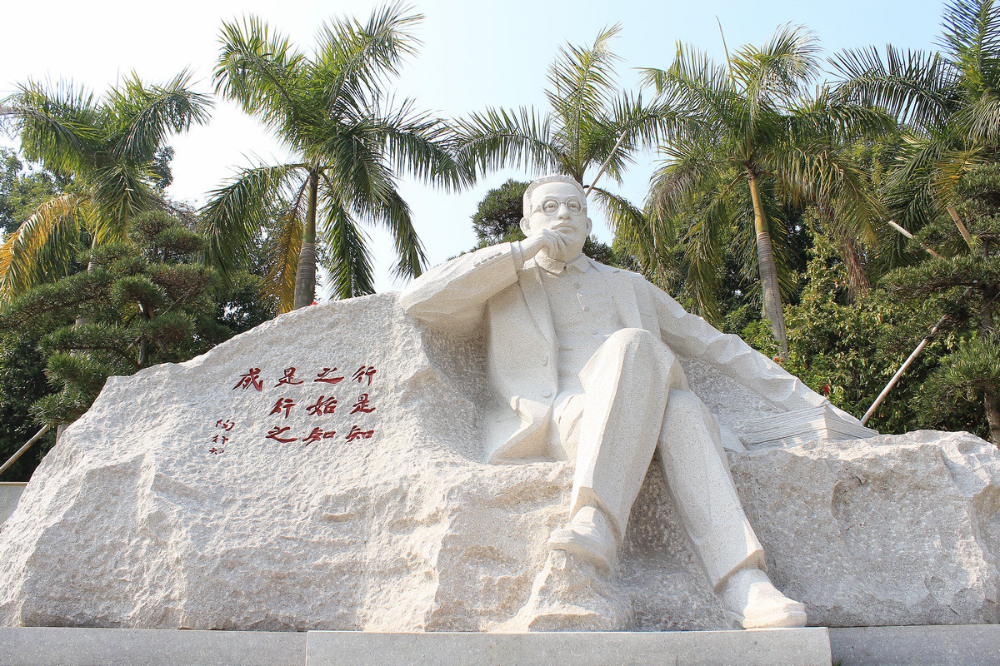

潮州教育
潮州的教育相对落后
由于经济并不发达，潮州的教育并不好。
潮州市内的韩山师范学院是潮州唯一一所本科院校，高等教育方面潮州落后得太多太多。
而普通教育方面，潮州的中小学与其他地区相比也有不小的差距，举高中为例，潮州最好的高中是潮州金山中学，每年都把大部分成绩最好的学生招了进去，但高考的时候成绩仍然落后隔壁的揭阳、汕头一些学校很多。 诚然，高考成绩不能完全说明地区的教育水平，但是潮州的其他方面比如素质教育，也没有比其他地方好，甚至也落后很多。

由于经济并不发达，潮州的教育并不好。
潮州市内的韩山师范学院是潮州唯一一所本科院校，高等教育方面潮州落后得太多太多。
而普通教育方面，潮州的中小学与其他地区相比也有不小的差距，举高中为例，潮州最好的高中是潮州金山中学，每年都把大部分成绩最好的学生招了进去，但高考的时候成绩仍然落后隔壁的揭阳、汕头一些学校很多。 诚然，高考成绩不能完全说明地区的教育水平，但是潮州的其他方面比如素质教育，也没有比其他地方好，甚至也落后很多。